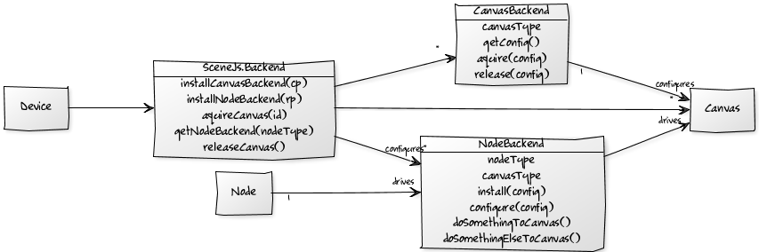
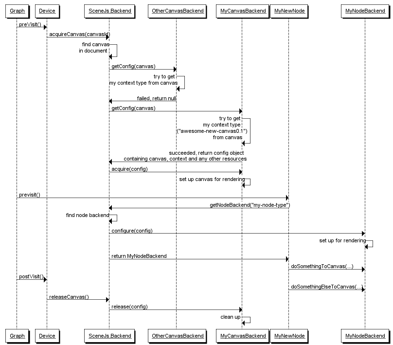

Extending SceneJS
One of the coolest things about SceneJS is that you can extend it easily; you can extend its API by defining new scene node types, and when a new type of HTML Canvas appears, you can add support for it.
The SceneJS architecture is split into two layers: the front-end, which contains scene graph node types, and the back-end, a framework containing plugins that mediate between the nodes and the supported canvases.
There are actually two kinds of plugin: CanvasBackends, which acquire contexts on supported canvases in the DOM, and NodeBackends, which each provide their corresponding scene node type with a facade through which they can drive a supported type of canvas. The SceneJS.Backend singleton ties all this together: for each supported canvas, SceneJS.Backend will have a CanvasBackend and a set of NodeBackends, one for each scene node type that supports the canvas.
When a Canvas scene node is pre-visited during graph traversal , it calls SceneJS.Backend.acquireCanvas to activate its canvas. Recall that a Canvas node is configured with a canvas ID. Then as sub-Nodes are visited, they can each call SceneJS.Backend.getBackend to get an appropriate NodeBackend through which they can interact with the active canvas. When the Canvas is post-visited, it calls SceneJS.Backend.releaseCanvas to deactivate the canvas. Internally, SceneJS.Backend automatically employs the appropriate plugins to support these methods. We'll look at this in more detail below.
In this page, I'm going to take you through an extension scenario: a new type of canvas element has arrived in browsers and you want to start making some scene node classes to drive it. This also covers what you would do to add support for a new canvas to existing node classes, and what you would do to define a new node type for a canvas that is already supported for other nodes.
We're going to add three elements to SceneJS:
- CanvasBackend Plugin - locates the supported canvas element and acquires a context on it
- NodeBackend Plugin - provides a facade of functions to the node through which it can drive the canvas
- Front-end Scene Node Class - extends the basic Node class to do stuff to the canvas on pre- and post-visit.
Then we'll look at sequence of interactions between all these classes.
CanvasBackend Plugin
Here's that canvas backend plugin. I'll let the comments do the talking for all the source files - you can also see when its methods are called in the sequence of interactions diagram below. Note how we just plug an anonymous instance of it into SceneJs.Backend. There are no actual baseclasse implementations for any of these plugins - they are more like names of contracts for them to honour.
NodeBackend Plugin
And here's that node backend plugin we were talking about:
Front-end Scene Node Class
And our last class, our new scene node type on the front-end:
Sequence of Interactions within the Framework
The sequence diagram below shows how the classes work together. Maybe it's just a little bit more than you really wanted to know on your one-hour lunchbreak, but bear with me for a minute and I'll step you through it. As the Graph is traversed, it pre-visits a Device which has been configured to acquire a canvas with a given ID for its sub-nodes to render to, which happens to be an "awesome-new-canvas-0.1" canvas element in the DOM. The Device tries to acquire the canvas from the SceneJS.Backend, which finds the canvas and then polls each installed CanvasBackend for a configuration (wrapping a context) on it. The first CanvasBackend fails to provide a configuration because it does not support an "awesome-new-canvas-0.1" canvas, but the second one (that's the one we just plugged in) does, and thus succeeds. The SceneJS.Backend then acquires the canvas though our CanvasBackend, passing it the configuration for it to set up whatever resources it needs against the canvas.
Next, traversal descends into the Device's sub-nodes. When our new node (MyNewNode, the one we just created) is pre-visited, it requests the "my-node-type" NodeBackend (the one we just plugged in) from the SceneJS.Backend. The SceneJS.Backend locates the NodeBackend, injects the configuration and returns it. The node then calls the NodeBackend's doSomethingToCanvas method.
When the Device is post-rendered, it signals the SceneJS.Backend to release the canvas. The SceneJS.Backend calls release on the CanvasBackend, which then has a chance to release any resources it needs to.
